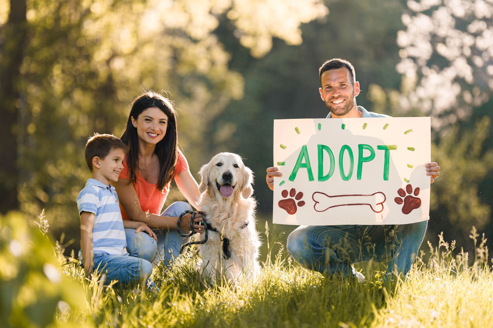

Dog Rescue & Shelter Operations
Providing emergency rescue, transportation, and safe, hygienic temporary shelter for stray, abandoned, abused, and surrendered domestic dogs throughout the Western Cape.
What we offer
We provide emergency rescue, transportation, and safe, hygienic temporary shelter for stray, abandoned, abused, and surrendered domestic dogs throughout the Western Cape and also deliver essential medical treatment, including emergency trauma surgeries, vaccinations, deworming, microchipping, and physical/behavioral rehabilitation for rescued dogs prior to rehoming.
Providing emergency rescue, transportation, and safe, hygienic temporary shelter for stray, abandoned, abused, and surrendered domestic dogs throughout the Western Cape.

Delivering essential medical treatment, including emergency trauma surgeries, vaccinations, deworming, microchipping, and physical/behavioral rehabilitation for rescued dogs prior to rehoming.

Running high-volume, accessible spay and neuter outreach initiatives targeting low-income and under-resourced communities to humanely control pet overpopulation.

Managing a structured adoption procedure that includes applicant interviews, home visits, and pet-matching processes to ensure dogs are placed in safe, permanent, and loving environments.
Organizing structured volunteer opportunities, foster care networks, and youth internships to train community members in dog handling, shelter maintenance, and welfare advocacy.